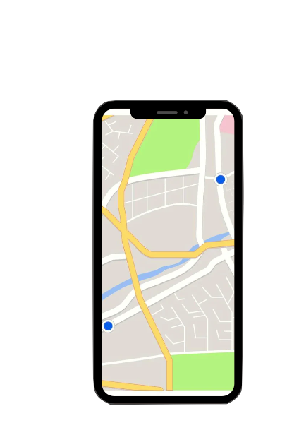

Transformando Comunidades, Um Problema de Cada Vez
Reporte Agora é uma iniciativa comunitária destinada a fortalecer o diálogo entre os residentes e as autoridades locais. Nossa missão é proporcionar uma maneira simples e eficaz para que os cidadãos relatem os problemas que encontram em seus bairros e cidades, para que juntos possamos resolver essas questões e melhorar a qualidade de vida para todos.
Sua plataforma dedicada a capacitar cidadãos a tornarem suas comunidades mais seguras, limpas e funcionais. Estamos comprometidos em facilitar o processo de relato de problemas urbanos, como buracos nas ruas, lâmpadas queimadas, calçadas danificadas e muito mais.

Com apenas alguns cliques, você pode relatar qualquer problema urbano que encontrar em sua área. Seja um buraco na rua, um semáforo quebrado ou um banco de praça danificado, queremos saber.
Forneça uma descrição detalhada do problema que você encontrou, incluindo informações importantes como a gravidade do problema e qualquer informação adicional que possa ajudar na resolução.
Uma vez que você tenha reportado um problema, você pode acompanhar seu progresso em tempo real. Receba atualizações sobre o status da resolução e veja como sua contribuição está fazendo a diferença em sua comunidade.
Ao relatar problemas urbanos, você está desempenhando um papel ativo na melhoria de seu bairro e cidade. Seu relato pode ajudar a prevenir acidentes, melhorar a infraestrutura local e criar um ambiente mais seguro e agradável para todos.
Junte-se a nós e seja parte da mudança positiva que sua comunidade merece.
Pronto para Fazer a Diferença? Junte-se a nós no Reporte Agora e comece a transformar sua comunidade hoje mesmo. Juntos, podemos construir um futuro melhor para todos. Seja ouvido. Seja parte da solução.
Rua Fabricio, 123, Curitiba - BH
(12) 3456-7890


.png)